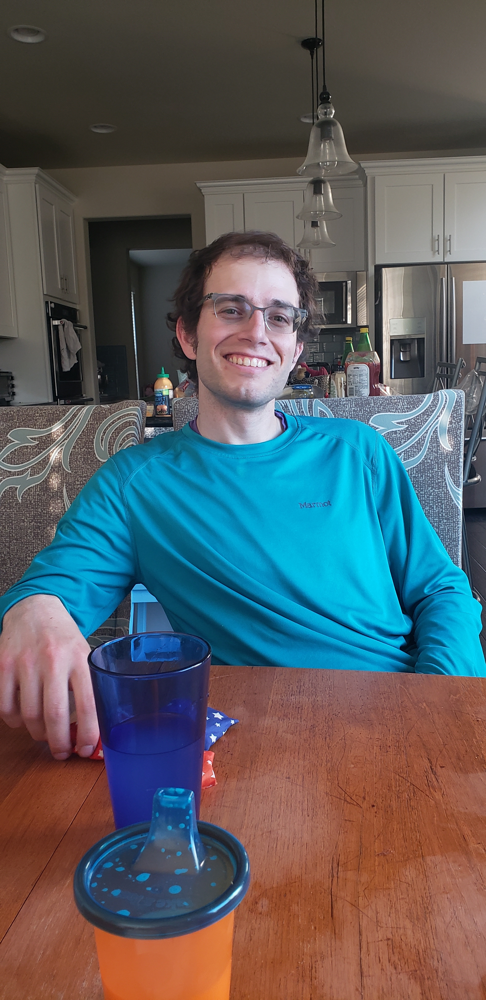
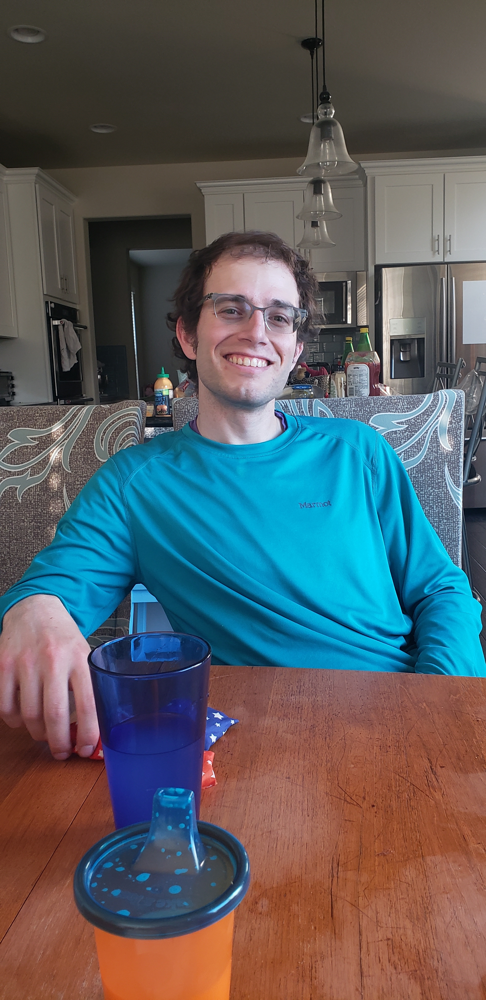

Name Our Plants!
Vote Here
Recommended Books

The Express of Salt and Fortune
Nghi Vo

An Indigenous People's History of the United States
Roxanne Dunbar-Ortiz

The Year of Magical Thinking
Joan Didion

The Expanse (series)
James S.A. Corey

The Sound of Gravel
Ruth Wariner

The Last Boat Out of Shanghai
Helen Zia
Recommended Recipes
Honey-Lime Berry Salad


Garam Masala Cookies

Blueberry Greek Yogurt Bark

Pictures


 
